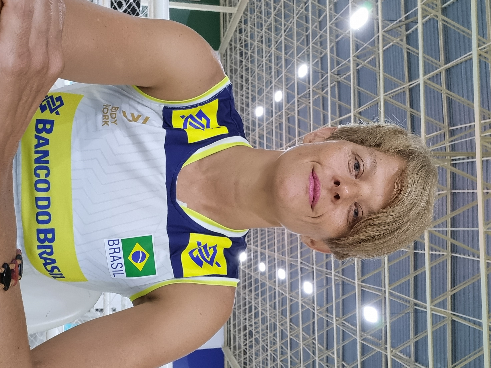
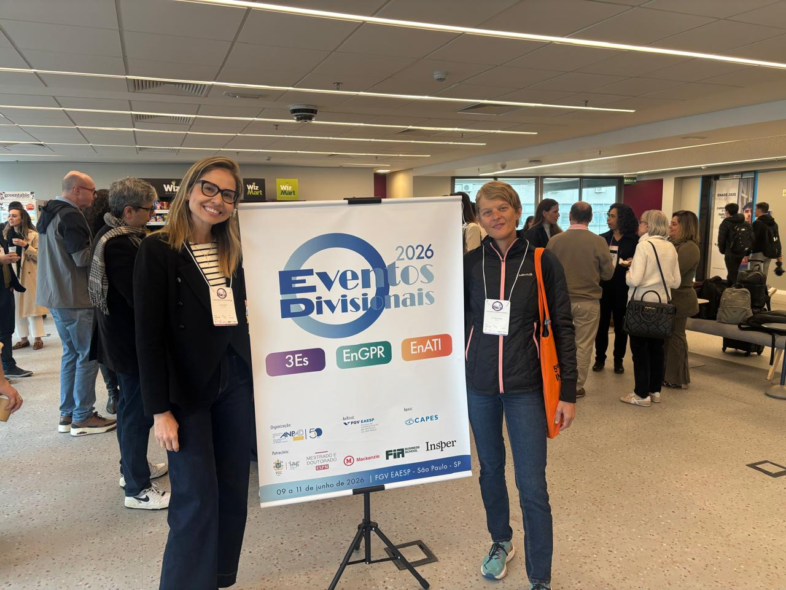

Sport has always been an omnipresent ingredient in my life: a lifestyle, a social environment, and a powerful vehicle for positive change. As a PhD candidate at PUC-Rio and a consultant with over 20 years of experience in project management, communications, and marketing, I bridge the gap between academic research and operational reality to help the sports industry grow sustainably and inclusively.
Main author of the chapter on Brazil in the book “Management of sport organizations at the crossroad of responsibility and sustainability: perceptions, practices, and prospects around the world"
Read MoreMain author of the article "Brand building and image perception in women football: a cross-country comparison between Brazil and Germany”.
Read MoreMain author of the article "Determinants of personal brand construction of national football players on Instagram”.
Read MoreEditor and author of three chapters of the book "Women’s Football in Latin America - Volume 1 - Brazil" with Jorge Dorfman Knijnik from Springer/Palgrave Macmillan.
Read MoreProponent and director of the Personal Brand Management of Athletes and Fan Management program for women's football in São Paulo.
Read MorePresentation at 3S (Strategy Congress) on research regarding how to attract fans to the FIFA Women's World Cup 2027, which will take place in Brazil.

Check out my channel for talks, interviews, and discussions on sports management and fandom.
Visit YouTube Channel